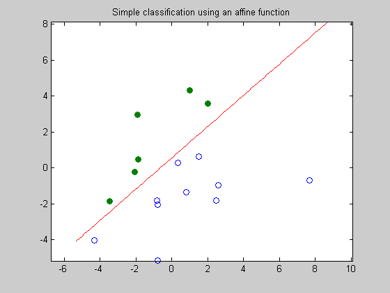

Figure 8.8: Simplest linear discrimination
n = 2;
randn('state',3);
N = 10; M = 6;
Y = [1.5+1*randn(1,M); 2*randn(1,M)];
X = [-1.5+1*randn(1,N); 2*randn(1,N)];
T = [-1 1; 1 1];
Y = T*Y; X = T*X;
fprintf('Finding a separating hyperplane...');
cvx_begin
variables a(n) b(1)
X'*a - b >= 1;
Y'*a - b <= -1;
cvx_end
fprintf(1,'Done! \n');
linewidth = 0.5;
t_min = min([X(1,:),Y(1,:)]);
t_max = max([X(1,:),Y(1,:)]);
t = linspace(t_min-1,t_max+1,100);
p = -a(1)*t/a(2) + b/a(2);
graph = plot(X(1,:),X(2,:), 'o', Y(1,:), Y(2,:), 'o');
set(graph(1),'LineWidth',linewidth);
set(graph(2),'LineWidth',linewidth);
set(graph(2),'MarkerFaceColor',[0 0.5 0]);
hold on;
plot(t,p, '-r');
axis equal
title('Simple classification using an affine function');
Finding a separating hyperplane...
Calling SDPT3: 16 variables, 3 equality constraints
For improved efficiency, SDPT3 is solving the dual problem.
------------------------------------------------------------
num. of constraints = 3
dim. of linear var = 16
*******************************************************************
SDPT3: Infeasible path-following algorithms
*******************************************************************
version predcorr gam expon scale_data
NT 1 0.000 1 0
it pstep dstep pinfeas dinfeas gap mean(obj) cputime
-------------------------------------------------------------------
0|0.000|0.000|1.2e+02|1.1e+01|7.8e+02|-3.200000e+01| 0:0:00| chol 1 1
1|0.677|1.000|3.9e+01|8.0e-02|2.3e+02|-1.743092e+01| 0:0:00| chol 1 1
2|0.985|1.000|6.0e-01|8.0e-03|3.5e+00|-2.648771e-01| 0:0:00| chol 1 1
3|0.989|1.000|6.6e-03|8.0e-04|3.9e-02|-2.954955e-03| 0:0:00| chol 1 1
4|0.989|1.000|7.3e-05|1.4e-03|4.3e-04|-3.251731e-05| 0:0:00| chol 1 1
5|0.989|1.000|8.0e-07|2.3e-05|4.7e-06|-3.581935e-07| 0:0:00| chol 1 1
6|0.984|1.000|1.3e-08|1.6e-07|7.6e-08|-5.934861e-09| 0:0:00| chol 1 1
7|0.987|1.000|1.7e-10|2.6e-09|1.0e-09|-7.855887e-11| 0:0:00|
stop: max(relative gap, infeasibilities) < 1.49e-08
-------------------------------------------------------------------
number of iterations = 7
primal objective value = -1.57117741e-10
dual objective value = 0.00000000e+00
gap := trace(XZ) = 1.04e-09
relative gap = 1.04e-09
actual relative gap = -1.57e-10
rel. primal infeas = 1.73e-10
rel. dual infeas = 2.57e-09
norm(X), norm(y), norm(Z) = 4.8e-11, 7.0e+00, 6.2e+01
norm(A), norm(b), norm(C) = 1.7e+01, 1.0e+00, 5.0e+00
Total CPU time (secs) = 0.1
CPU time per iteration = 0.0
termination code = 0
DIMACS: 1.7e-10 0.0e+00 6.4e-09 0.0e+00 -1.6e-10 1.0e-09
-------------------------------------------------------------------
------------------------------------------------------------
Status: Solved
Optimal value (cvx_optval): +1.57118e-10
Done!
